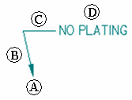
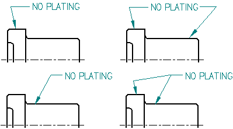
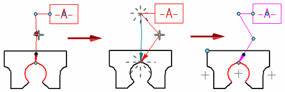

Working with leaders
Annotations with leaders have the following components:

|
(A) |
Terminator |
|
(B) |
Leader line |
|
(C) |
Break line |
|
(D) |
Annotation |
You can manipulate the annotation by selecting the leader and moving parts of it. You can control the display of a leader break line and terminator and insert or delete vertices on a leader.
Adding leaders
When placing an annotation, you can use the Leader and Break Line options on the command bar to add a leader. You also can add a leader to an existing annotation using the Leader command.
An annotation can have more than one leader. The terminator end of the annotation can point to an element or be placed in free space. The annotation end of a new leader must connect to an annotation or to the leader on an annotation.

Inserting and deleting vertices on leaders
You can insert or delete a vertex on any annotation with a leader using the Alt key. Vertices are edit points that you can use to manipulate the leader line.
When you insert a vertex, you split the leader into two segments. You can drag the vertex to change the orientation and angle of the leader.

You can add a vertex by selecting a leader, holding the Alt key, and clicking where you want to insert the edit point. To learn how, see the help topic, Insert a vertex in a leader.
You can delete a vertex by pressing the Alt key while you click the vertex you want to remove. To learn how, see the help topic, Delete a vertex from a leader.